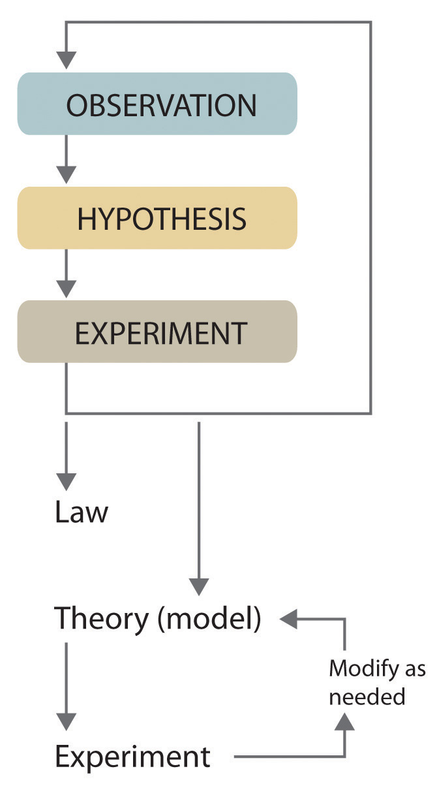
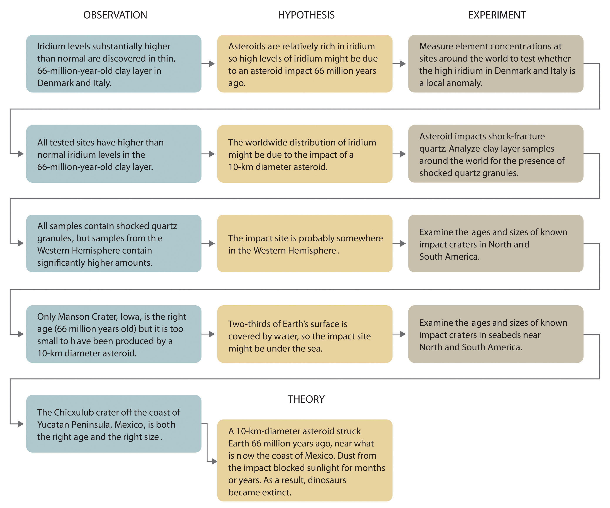

Scientists search for answers to questions and solutions to problems by using a procedure called the scientific methodThe procedure that scientists use to search for answers to questions and solutions to problems.. This procedure consists of making observations, formulating hypotheses, and designing experiments, which in turn lead to additional observations, hypotheses, and experiments in repeated cycles (Figure 1.4 "The Scientific Method").
Figure 1.4 The Scientific Method
As depicted in this flowchart, the scientific method consists of making observations, formulating hypotheses, and designing experiments. A scientist may enter the cycle at any point.
Observations can be qualitative or quantitative. Qualitative observations describe properties or occurrences in ways that do not rely on numbers. Examples of qualitative observations include the following: the outside air temperature is cooler during the winter season, table salt is a crystalline solid, sulfur crystals are yellow, and dissolving a penny in dilute nitric acid forms a blue solution and a brown gas. Quantitative observations are measurements, which by definition consist of both a number and a unit. Examples of quantitative observations include the following: the melting point of crystalline sulfur is 115.21 degrees Celsius, and 35.9 grams of table salt—whose chemical name is sodium chloride—dissolve in 100 grams of water at 20 degrees Celsius. For the question of the dinosaurs’ extinction, the initial observation was quantitative: iridium concentrations in sediments dating to 66 million years ago were 20–160 times higher than normal.
After deciding to learn more about an observation or a set of observations, scientists generally begin an investigation by forming a hypothesisA tentative explanation for scientific observations that puts the system being studied into a form that can be tested., a tentative explanation for the observation(s). The hypothesis may not be correct, but it puts the scientist’s understanding of the system being studied into a form that can be tested. For example, the observation that we experience alternating periods of light and darkness corresponding to observed movements of the sun, moon, clouds, and shadows is consistent with either of two hypotheses: (1) Earth rotates on its axis every 24 hours, alternately exposing one side to the sun, or (2) the sun revolves around Earth every 24 hours. Suitable experiments can be designed to choose between these two alternatives. For the disappearance of the dinosaurs, the hypothesis was that the impact of a large extraterrestrial object caused their extinction. Unfortunately (or perhaps fortunately), this hypothesis does not lend itself to direct testing by any obvious experiment, but scientists can collect additional data that either support or refute it.
After a hypothesis has been formed, scientists conduct experiments to test its validity. ExperimentsA systematic observation or measurement, preferably made under controlled conditions—that is, conditions in which the variable of interest is clearly distinguished from any others. are systematic observations or measurements, preferably made under controlled conditions—that is, under conditions in which a single variable changes. For example, in our extinction scenario, iridium concentrations were measured worldwide and compared. A properly designed and executed experiment enables a scientist to determine whether the original hypothesis is valid. Experiments often demonstrate that the hypothesis is incorrect or that it must be modified. More experimental data are then collected and analyzed, at which point a scientist may begin to think that the results are sufficiently reproducible (i.e., dependable) to merit being summarized in a lawA verbal or mathematical description of a phenomenon that allows for general predictions and says what happens, not why it happens., a verbal or mathematical description of a phenomenon that allows for general predictions. A law simply says what happens; it does not address the question of why. One example of a law, the law of definite proportionsA chemical substance always contains the same proportions of elements by mass., which was discovered by the French scientist Joseph Proust (1754–1826), states that a chemical substance always contains the same proportions of elements by mass. Thus sodium chloride (table salt) always contains the same proportion by mass of sodium to chlorine, in this case 39.34% sodium and 60.66% chlorine by mass, and sucrose (table sugar) is always 42.11% carbon, 6.48% hydrogen, and 51.41% oxygen by mass.You will learn in Chapter 12 "Solids" that some solid compounds do not strictly obey the law of definite proportions. (For a review of common units of measurement, see Essential Skills 1 in Section 1.9 "Essential Skills 1".) The law of definite proportions should seem obvious—we would expect the composition of sodium chloride to be consistent—but the head of the US Patent Office did not accept it as a fact until the early 20th century.
Whereas a law states only what happens, a theoryA statement that attempts to explain why nature behaves the way it does. attempts to explain why nature behaves as it does. Laws are unlikely to change greatly over time unless a major experimental error is discovered. In contrast, a theory, by definition, is incomplete and imperfect, evolving with time to explain new facts as they are discovered. The theory developed to explain the extinction of the dinosaurs, for example, is that Earth occasionally encounters small- to medium-sized asteroids, and these encounters may have unfortunate implications for the continued existence of most species. This theory is by no means proven, but it is consistent with the bulk of evidence amassed to date. Figure 1.5 "A Summary of How the Scientific Method Was Used in Developing the Asteroid Impact Theory to Explain the Disappearance of the Dinosaurs from Earth" summarizes the application of the scientific method in this case.
Figure 1.5 A Summary of How the Scientific Method Was Used in Developing the Asteroid Impact Theory to Explain the Disappearance of the Dinosaurs from Earth
Classify each statement as a law, a theory, an experiment, a hypothesis, a qualitative observation, or a quantitative observation.
Given: components of the scientific method
Asked for: statement classification
Strategy:
Refer to the definitions in this section to determine which category best describes each statement.
Solution:
Exercise
Classify each statement as a law, a theory, an experiment, a hypothesis, a qualitative observation, or a quantitative observation.
Answer:
Because scientists can enter the cycle shown in Figure 1.4 "The Scientific Method" at any point, the actual application of the scientific method to different topics can take many different forms. For example, a scientist may start with a hypothesis formed by reading about work done by others in the field, rather than by making direct observations.
It is important to remember that scientists have a tendency to formulate hypotheses in familiar terms simply because it is difficult to propose something that has never been encountered or imagined before. As a result, scientists sometimes discount or overlook unexpected findings that disagree with the basic assumptions behind the hypothesis or theory being tested. Fortunately, truly important findings are immediately subject to independent verification by scientists in other laboratories, so science is a self-correcting discipline. When the Alvarezes originally suggested that an extraterrestrial impact caused the extinction of the dinosaurs, the response was almost universal skepticism and scorn. In only 20 years, however, the persuasive nature of the evidence overcame the skepticism of many scientists, and their initial hypothesis has now evolved into a theory that has revolutionized paleontology and geology.
In Section 1.3 "A Description of Matter", we begin our discussion of chemistry with a description of matter. This discussion is followed by a summary of some of the pioneering discoveries that led to our present understanding of the structure of the fundamental unit of chemistry: the atom.
Chemists expand their knowledge by making observations, carrying out experiments, and testing hypotheses to develop laws to summarize their results and theories to explain them. In doing so, they are using the scientific method.
What are the three components of the scientific method? Is it necessary for an individual to conduct experiments to follow the scientific method?
Identify each statement as a theory or a law and explain your reasoning.
Identify each statement as a theory or a law and explain your reasoning.
Classify each statement as a qualitative observation or a quantitative observation.
Classify each statement as a quantitative observation or a qualitative observation.